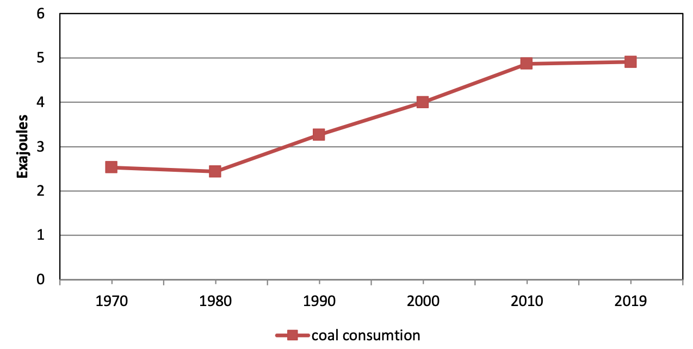
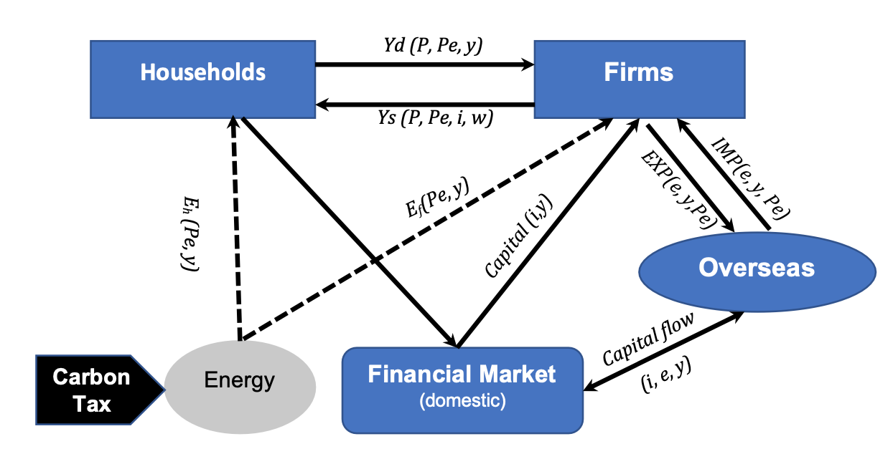

Economic impacts of carbon tax in Japan
09/30 2022
Author: Farhad Taghizadeh-Hesary
1. Introduction and Background
Over the last decades, environmental pollution caused by fossil fuel consumption has become a controversial issue among scholars and policymakers. The issue accepted by all scholars is that environmental pollution threatens all people of the world. Therefore, global consensus and unity are essential to solving this problem (Vohra et al., 2021; Chen et al., 2022). Despite various global and regional agreements (such as the Paris Agreement on climate change, The Kyoto Protocol, and the 2030 Climate Target Plan of the European Commission) and long-term plans to reduce fossil fuel consumption in countries around the world, this challenge is at the forefront of policymakers. This challenge is a threat to the environment and even to human survival. Zou et al. (2016) and Koengkan et al. (2022) argue that this challenge cannot be solved quickly, and they forecast that oil and gas production peaks will be around 2040 and 2060, respectively. Asselt (2021) and Taghizadeh-Hesary et al. (2021) believe that fossil fuels are the most critical factor in climate disruption, potentially threatening future human life. Table 1 reports the changes in carbon dioxide (CO2) emissions and fossil fuel consumption from 1970 to 2019.
| Variable | 1970 | 1980 | 1990 | 2000 | 2010 | 2019 | Growth rate 1970-2019 |
|---|---|---|---|---|---|---|---|
| Crude oil consumption (Thousand barrels daily) | 45313 | 361408 | 66364 | 76485 | 86856 | 98272 | 116.8% |
| Gas consumption (Billion cubic meters) | 961.5 | 1423.8 | 1948.4 | 2400 | 3160.7 | 3929.2 | 308.6% |
| Coal consumption (Exajoules) | 61.41 | 75.09 | 93.22 | 98.70 | 151.19 | 157.86 | 158.6% |
| CO2 emissions (Million tons) | 14312.9 | 18433.6 | 21331.5 | 23676.4 | 31085.5 | 34169 | 138.7% |
The challenge of climate disruption caused by CO2 emissions from fossil fuel consumption is more profound for developed economies like Japan. The rapid industrialization growth of Japan in 1960 and 1970, linked the country's economic growth to fossil fuels consumption. Although Japan has tried to reduce its dependence on fossil fuel imports, increase energy security, and create sustainable development in recent years, it has not achieved significant success in the energy transition. Even after the 2011 Fukushima nuclear crisis, the country's domestic industry became increasingly dependent on fossil fuels (Taghizadeh-Hesary et al., 2017). Cong et al. (2022), Ishiguro and Yano (2015), and Kazama and Noda (2012) express that the 2011-The Great East Japan Earthquake (GEJE) has shifted Japan from nuclear energy to fossil fuel consumption. Figure 1 shows the changes in coal consumption in Japan from 1970 to 2019:

Despite some earlier plans and roadmaps for carbon neutrality in Japan, such as the “Law concerning Promotion of Measures to Cope with Global Warming” established in 1998 and Japan's Voluntary Emissions Trading Scheme (JVETS) in 2010, the country has tried to employ more efficient tools in the last decade. In October 2012, as the first country in Asia, Japan implemented the carbon tax of 2.65$ with the clear goal of an 80% reduction in Japan’s Greenhouse Gas (GHG) emissions by 2050 (Nakano and Yamagishi 2021). Generally, to internalize the adverse externality of CO2 and to motivate enterprises to develop greener productions, the Japanese government has used the carbon tax policy. Yoshino, Rasoulinezhad, and Taghizadeh-Hesary (2021) answered how can carbon tax affect the Japanese economy?” Their empirical study results is summarized in this policy brief (Section 3). Appelbaum (2021) believes that carbon tax policy can make a wide range of environmental-friendly results for the global society. According to OECD's Effective Carbon Rates statistics, in 2018, the best scores are for Switzerland, and Luxembourg (69%), Norway (68%), and Japan's score is 24%, among the lowest efficient carbon rates among OECD members.
2. Theoretical Background
Yoshino, Rasoulinezhad, and Taghizadeh-Hesary (2021) explored the impacts of the carbon tax on macroeconomic variables in Japan in a general equilibrium framework. Earlier studies mainly assessed the impact of the carbon tax policy on energy prices and not on all economic sectors.

Note: yd, ys, y, P, Pe, w,i,e, Eh,Ef,capital,EXP,IMP denote: household’s demand, firms supply, total demand/income (GDP), general price level, price of energy, wage rate, interest rate, exchange rate, energy demand of households, energy demand of firms, capital flow, export, import respectively
Figure 2 shows the general framework of the impact of carbon tax on the economy, which was developed by Yoshino, Rasoulinezhad, and Taghizadeh-Hesary (2021). A summarization of the relationships mentioned above clarifies that an increase in energy prices due to carbon tax will change the households’ consumption and saving behavior. Changes in savings will change the banking behavior, the capital markets behavior, and the flow of funds that would change the interest rate. On the other hand, due to carbon tax, the final price of products would change, affecting the import and export that alter the current account balance. Changes in financial flow caused by the carbon tax will change the capital inflow and outflow from overseas, which will change the exchange rate. Changes in the exchange rate will change the firm production behavior.
3. Empirical Results
Yoshino, Rasoulinezhad, and Taghizadeh-Hesary (2021) developed a Structural Vector Autoregression (SVAR) model using quarterly data of Japan covering the period of 2005-2020 to assess the impacts of the carbon tax on the macroeconomic variables of Japan. The main findings from the empirical results are:
- An increase in energy price (+ carbon tax) will increase the interest rate (lending rate). The main reason is that an increase in energy prices due to carbon tax will change the households’ consumption and saving behavior. Changes in savings will change the banking behavior, the capital markets behavior, and the flow of funds that would change the interest rate.
- By increasing energy prices, Japan needs to pay more foreign currencies (dollars) to import fossil fuels leading to a devaluation of the national currency (Yen) and an increase in the foreign exchange rate in the country.
- Any increase in energy price due to carbon tax leads to the rise of Japan's commodities' general price level. The main reason is that if the price of energy as a major production input for the industrial sector, power plants, and transportation sectors in Japan increases, the cost of production jumps and consequently leads to an increase in the consumer price index and inflation rate.
- An increase in energy prices due to carbon tax leads to a reduction in the real GDP of Japan. Due to the primary role of industrial production in the GDP of Japan, any increase in fossil fuel prices by carbon tax, will lead to a more expensive production cost for industries which may decrease production volumes leading to slower economic growth for Japan.
References
• Appelbaum, E. 2021. Improving the Efficacy of Carbon Tax Policies. Journal of Government and Economics, 100027, In Press.• Asselt, H. 2021. Governing fossil fuel production in the age of climate disruption: Towards an international law of ‘leaving it in the ground’. Earth System Governance. 9, 100118.
• Chen, Z., Tan, Y., and Xu, J. 2022. Economic and environmental impacts of the coal-to-gas policy on households: Evidence from China. Journal of Cleaner Production. 341, 1360608.
• Cong, R., Gomi, K., Togawa, T., Hirano, Y., and Oba, M. 2022. How and why did fossil fuel use change in Fukushima Prefecture before and after the Great East Japan Earthquake? Energy Reports. 8: 1159- 1173.
• Ishiguro, A., and Yano, E. 2015. Tsunami inundation after the Great East Japan Earthquake and mortality of affected communities. Public Health, 129 (10): 1390-1397.
• Kazama, M., and Noda, T. 2012. Damage statistics (Summary of the 2011 off the Pacific Coast of Tohoku Earthquake damage). Soils and Foundations, 52 (5): 780-792.
• Koengkan, M., Fuinhas, J., Kazemzadeh, E., Alavijeh, N., and Araujo, S. 2022. The impact of renewable energy policies on deaths from outdoor and indoor air pollution: Empirical evidence from Latin American and Caribbean countries. Energy, 245, 123209.
• Nakano, K., and Yamagishi, K. 2021. Impact of Carbon Tax Increase on Product Prices in Japan. Energies, 14 (7), 1986, doi: https://doi.org/10.3390/en14071986
• Sadayuki, T., and Arimura, T. 2021. Do regional emission trading schemes lead to carbon leakage within firms? Evidence from Japan. Energy Economics. 104, 105664
• Vohra, K., Vodonos, A., Schwartz, J., Marais, E., Sulprizio, M., Mickley, L. 2021. Global mortality from outdoor fine particle pollution generated by fossil fuel combustion: Results from GEOS-Chem. Environmental Research. 195, 110754.
• Taghizadeh-Hesary F., N. Yoshino and E. Rasoulinezhad (2017). Impact of Fukushima Nuclear Disaster on Oil-Consuming Sectors of Japan. Journal of Comparative Asian Development. 16:2, 113-134.
• Taghizadeh-Hesary, F., E. Rasoulinezhad, N. Yoshino, Y. Chang, F. Taghizadeh-Hesary, and P. J. Morgan. (2021). The Energy–Pollution–Health Nexus: A Panel Data Analysis of Low- and Middle-income Asian Countries. The Singapore Economic Review. Vol. 66, No. 02, pp. 435-455.
• Yoshino N., Rasoulinezhad E., and Taghizadeh-Hesary F. (2021). Economic Impacts of Carbon Tax in a General Equilibrium Framework: Empirical Study of Japan. Journal of Environmental Assessment Policy and Management. 23 (01n02), 2250014.
• Zou, C., Zhao, Q., Zhang, G., and Xiong, B. 2016. Energy revolution: From a fossil energy era to a new energy era. Natural Gas Industry B. 3 (1): 1- 11.